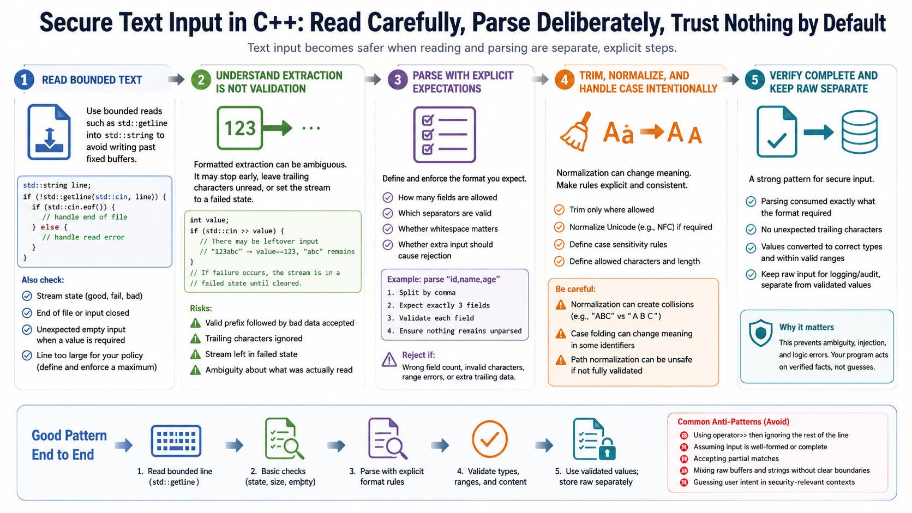

Safer Text Input and Parsing Patterns
Connecting to LMS... Progress: in progress

Narration
Text input becomes safer when reading and parsing are separate, explicit steps. A bounded read, such as reading a line with std::getline into a std::string, avoids writing past a fixed buffer. But reading a line is not the same as validating it. The program still needs to check stream state, handle end of file, reject unexpected empty input when a value is required, and decide what to do with lines that are too large for the application policy.
Stream extraction can be convenient, but it can also be ambiguous. A formatted extraction may stop early, leave trailing characters unread, or put the stream into a failed state. If code reads an integer and ignores the rest of the line, input such as a valid prefix followed by unexpected data may be accepted accidentally. Secure parsing uses explicit expectations: how many fields are allowed, which separators are valid, whether whitespace matters, and whether extra input should cause rejection.
Trimming, normalization, and case handling should be intentional. Normalizing a username, path, command option, or identifier can change its meaning if the rules are vague. Reject partial or malformed records rather than trying to guess what the user meant in security-relevant contexts. A strong pattern is to read bounded text, parse into typed values, verify that parsing consumed exactly what the format required, and keep raw input separate from validated values. This keeps convenience from becoming ambiguity.